전산응용토목제도기능사 (2006-01-22 기출문제)
1과목: 토목제도(CAD)
1. 콘크리트에 AE제를 혼합하는 주목적은?
- 워커빌리티 증대를 위해서
- 부피를 증대하기 위해서
- 강도의 증대를 위해서
- 시멘트 절약을 위해서
(정답률: 85%)

2. 한중 콘크리트에 관한 다음 설명 중 옳지 않은 것은?
- 하루의 평균기온이 4℃ 이하가 되는 기상조거 하에서는 한중콘크리트로서 시공한다.
- 콘크리트의 온도는 타설할 때 5℃~20℃를 원칙으로 한다.
- 가열한 재료를 믹서에 투입할 경우 가열한 물과 굵은골재, 잔골재를 넣어서 믹서안의 재료온도가 60℃ 정도가 된 후 시멘트를 넣는 것이 좋다.
- AE 콘크리트를 사용하는 것을 원칙으로 한다.
(정답률: 58%)
3. 보의 주철근의 수평 순간격은 최소 얼마 이상인가?
- 2.5㎝ 이상
- 3.5㎝ 이상
- 4.5㎝ 이상
- 5.5㎝ 이상
(정답률: 70%)
4. 골재의 조립률은 골재 알의 지름이 클수록 크다. 콘크리트용 잔골재의 조립률은 어느 정도가 좋은가?
- 2.3~3.1
- 3.5~5.6
- 6~8
- 9~12
(정답률: 55%)
5. 콘크리트의 배합에서 수밀성을 기준으로 하는 경우 물-시멘트의 최대값은 어느 정도를 표준으로 하는가?
- 30%
- 35%
- 50%
- 55%
(정답률: 59%)
6. 일반적인 경우 고정하중 D와 활하중 L을 포함한 극한 설계하중(U)는 다음 중 어느 것인가?
- 1.4D＋1.7L
- 0.9D＋1.7L
- 1.4D＋1.8L
- 1.3D＋1.8L
(정답률: 40%)
7. 철근의 지름에 따른 표준갈고리의 최소 구부림 내면반지름이 적절히 연결된 것은? (단, db는 철근의 공칭지름)
- D10~D25인 경우 3db
- D10~D25인 경우 5db
- D29~D35인 경우 3db
- D29~D35인 경우 5db
(정답률: 60%)
8. 표준 갈고리를 가지는 인장 이형철근의 정착길이는 철근지름 db의 몇 배 이상이어야 하고, 또 얼마 이상이어야 하는가?
- 4db, 12㎝
- 5db, 12㎝
- 6db, 15㎝
- 8db, 15㎝
(정답률: 12%)
9. 철근 콘크리트에서 콘크리트의 피복 두께에 대한 설명이 잘못된 것은?
- 철근이 산화하지 않도록 피복 두께를 설치한다.
- 철근과 콘크리트의 부착력을 확보 한다.
- 내화구조를 위해 피복 두께를 설치한다.
- 슬래브의 피복 두께는 보와 기둥의 피복 두께보다 더 크게 설치한다.
(정답률: 61%)
10. 중립축으로부터 압축측 콘크리트 상단까지의 거리가 20㎝인 단철근 직사각형보에서 콘크리트의 설계 기준 강도가 250㎍f/cm2(=25MPa)인 경우 등가사각형의 깊이는 a는?
- 17㎝
- 18㎝
- 20㎝
- 21㎝
(정답률: 17%)
11. 전단철근으로 부재축에 직각인 스터럽을 사용할 때 간격은 얼마여야 하는가? (단, d는 부재의 유효깊이 이다.)
- 0.25d 이하, 40㎝ 이하
- 0.5d 이하, 40㎝ 이하
- 0.25d 이하, 60㎝ 이하
- 0.5d 이하, 60㎝ 이하
(정답률: 17%)
12. 반원형(180°) 표준갈고리는 철근지름의 최소 몇 배 이상 연장해야 하는가?
- 4배
- 5배
- 6배
- 7배
(정답률: 55%)
13. 단철근 직사각형보에서 단면의 폭이 30㎝, 높이가 55㎝, 유효깊이가 50㎝, 인장 철근량이 15cm2일 때 인장철근의 철근비는?
- 0.01
- 0.001
- 0.0⑤
- 0.008
(정답률: 23%)
14. 다음 중 철근의 이음방법이 아닌 것은?
- 신축 이음
- 겹침 이음
- 용접 이음
- 기계적 이음
(정답률: 76%)
15. 강도 설계법에 있어 강도감소계수 ø의 값으로 잘못 연결된 것은?
- 축 방향 나선 철근 부재 : ø=0.75
- 휨 부재 : ø=0.70
- 휨모멘트를 받는 무근 콘크리트 : ø=0.65
- 축 방향 인장 부재 : ø=0.85
(정답률: 38%)
16. 철근과 콘크리트가 그 경계 면에서 미끄러지지 않도록 지향하는 것을 무엇이라 하는가?
- 부착
- 정착
- 철근이음
- 스터럽
(정답률: 49%)
17. 일반적인 철근콘크리트(RC)에 비하여 프리스트레스트 콘크리트(PSC)의 특징 중 틀린 것은?
- PSC는 RC에 비하여 고강도의 콘크리트를 사용한다.
- PSC는 설계 하중이 작용하더라도 균열이 발생하지 않는다.
- PSC는 RC에 비하여 단면을 작게 할 수 있어, 지간이 긴 교량에 적당하다.
- PSC에서는 프리스트레싱 작업 시 최대 응력을 받으므로 사용하중 상태에서 안정성이 낮다.
(정답률: 42%)
18. 다음 중 교량을 용도에 따라 분류한 것으로 잘못된 것은?
- 도로교
- 철도교
- 수로교
- 석교
(정답률: 71%)
19. 옹벽의 전도에 대한 안전율 최소 얼마 이상이어야 하는가?
- 1
- 2
- 3
- 4
(정답률: 55%)
20. 일반적인 강 구조의 특징이 아닌 것은?
- 내구성이 우수하다.
- 부재를 개수하거나 보강하기 쉽다.
- 차량 통행으로 인한 소음이 적다.
- 균질성이 우수하다.
(정답률: 89%)
2과목: 철근콘크리트
21. 설계의 절차에 있어서 다음 중 가장 나중에 해야 하는 것은?
- 재료의 선정
- 응력의 결정
- 하중의 결정
- 사용성의 검토
(정답률: 69%)
22. 도로교의 설계 하중에서 1등교에 속하는 것은?
- DB - 8.5
- DB - 13.5
- DB - 18
- DB - 24
(정답률: 45%)
23. 교량의 자중을 비롯하여 교량에 부설된 모든 시설물의 중량을 무엇이라 하는가?
- 고정하중
- 할하중
- 충격하중
- 부하중
(정답률: 67%)
24. 자동차, 트럭이 교량 위를 달릴 때 교량이 진동하게 되는데 이러한 하중을 무엇이라고 하는가?
- 고정하중
- 사하중
- 충격하중
- 풍하중
(정답률: 76%)
25. 1방향 슬래브에서 주철근의 간격에 대한 설명으로 가장 적합한 것은?
- 최대 휨모멘트가 일어나는 단면에서 슬래브두께의 2배 이하이어야 하고, 또한 20㎝ 이하로 하여야 한다.
- 최대 휨모멘트가 일어나는 단면에서 슬래브두께의 2배 이하이어야 하고, 또한 30㎝ 이하로 하여야 한다.
- 최대 휨모멘트가 일어나는 단면에서 슬래브두께의 3배 이하이어야 하고, 또한 40㎝ 이하로 하여야 한다.
- 최대 휨모멘트가 일어나는 단면에서 슬래브두께의 3배 이하이어야 하고, 또한 50㎝ 이하로 하여야 한다.
(정답률: 64%)
26. 철근 콘크리트 구조물의 장점이 아닌 것은?
- 내구성, 내화성, 내진성이 우수하다.
- 여러 가지 모양과 치수의 구조물을 만들기 쉽다.
- 다른 구조물에 비하여 유지 관리비가 적게 든다.
- 각 부재를 일체로 만들기가 어려워 구조물의 강성이 작다.
(정답률: 59%)
27. 2방향 작용에 의하여 펀칭 전단(punching shear)이 일어나는 독립확대기초 일 때 전단 파괴가 일어나는 곳은? (단, d는 기초판의 유효깊이 이다.)
- 기둥 전면에서 d/2만큼 떨어진 곳
- 기둥 전면에서 d/3만큼 떨어진 곳
- 기둥 전면에서 d/4만큼 떨어진 곳
- 기둥 전면
(정답률: 36%)
28. 교량의 상부구조가 아닌 것은?
- 바닥틀
- 주트러스
- 교대
- 받침
(정답률: 64%)
29. 프리스트레스트 콘크리트의 PSC 부재에서 긴장재를 수용하기 위하여 미리 콘크리트 속에 넣어두어 구멍을 형성하기 위하여 사용하는 관은?
- 정착 장치
- 시스(sheath)
- 덕트(duct)
- 암거
(정답률: 63%)
30. 그림과 같이 슬래브에 놓이는 하중이 지간이 긴 A1 보와 A2 보에 의해 지지되는 구조는?
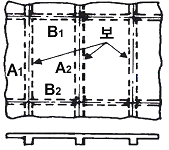
- 1방향 슬래브
- 2방향 슬래브
- 3방향 슬래브
- 4방향 슬래브
(정답률: 57%)
31. CAD소프트웨어의 기능 중 기본기능에 속하지 않은 것은?
- 도면 요소 편집 및 도면화 기능
- 도면 요소 작성 및 변환 기능
- 데이터 관리 및 가공정보 기능
- 화면제어 및 플로팅 기능
(정답률: 50%)
32. 다음 중 선의 접속 및 교차 제도방법이 틀린 것은?
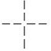
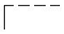
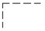
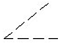
(정답률: 74%)
33. 다음 중 하천측량의 종단면도에 기입할 사항이 아닌 것은?
- 이기점
- 하저경사
- 수면경사
- 양안의 제방의 고저
(정답률: 37%)
34. 단면도의 절단면을 해칭 하고자 한다. 이때 사용되는 선의 종류는?
- 가는파선
- 가는 2점쇄선
- 가는실선
- 가는 1점쇄선
(정답률: 56%)
35. CAD의 좌표계가 아닌 것은?
- 절대좌표
- 상대직교좌표
- 상대극좌표
- 상대접합좌표
(정답률: 67%)
36. 토목제도에서 보기와 같은 이음은 다음 중 어떤 이음을 나타낸 것인가?
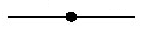
- 철근 용접 이음
- 철근 갈고리 이음
- 철근의 기계적 이음
- 철근의 평면 이음
(정답률: 85%)
37. 다음은 재료의 단면표시이다. 무엇을 표시하는가?
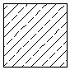
- 석재
- 목재
- 강재
- 콘크리트
(정답률: 65%)
38. 글자를 제도하는 방법을 설명한 것으로 틀린 것은?
- 문장은 가로 왼쪽부터 쓰기를 원칙으로 한다.
- 영자는 주로 로마자의 소문자를 사용한다.
- 숫자는 아라비아 숫자를 원칙으로 한다.
- 치수 표시의 문자의 크기는 일반적으로 4.5mm로 한다.
(정답률: 73%)
39. 철근의 표시법과 그에 대한 설명으로 바른 것은?
- ø13 - 반지름 13㎜의 원형철근
- D16 - 공칭지름 16㎜의 이형철근
- H16 - 높이 16㎜의 고강도 이형철근
- ø13 - 공칭지름 13㎜의 이형철근
(정답률: 62%)
40. 리벳 이음에 대한 설명 중 틀린 것은?
- 리벳기호는 리벳선 옆에 기입한다.
- 현장 리벳은 그 기호를 생략하지 않는다.
- 축이 투상면에 나란한 리벳은 그리지 않는다.
- 도면 중에 다른 리벳을 사용할 경우 리벳마다 그 지름을 기입한다.
(정답률: 22%)
3과목: 토목일반구조
41. 입체의 3주축(X, Y, Z) 중에서 2주축을 투상면과 평행으로 놓고 정면도로 하여 옆면 모서리축을 수평선과 임의의 각으로 그려진 투상도법은?
- 제 1각법
- 축측 투상도법
- 사투상도법
- 투시도법
(정답률: 42%)
42. 선의 굵기 비율 중 가는선 : 굵은선 : 아주 굵은선의 비율을 바르게 표현한 것은?
- 1 : 2 : 3
- 1 : 2 : 4
- 1 : 2 : 5
- 1 : 3 : 6
(정답률: 76%)
43. 보기 입체도의 화살표 방향이 정면일 때 평면도로 가장 적합한 것은?
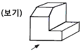
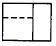
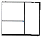
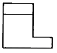
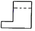
(정답률: 77%)
44. 대상물의 보이는 부분의 겉모양(외형)을 표시할 때 사용하는 선은?
- 파선
- 굵은 실선
- 가는 실선
- 1점 쇄선
(정답률: 60%)
45. 한국 산업 규격 중 토건의 KS 부문별 기호는?
- KS A
- KS F
- KS L
- KS D
(정답률: 85%)
46. 다음 중 토목제도에서 가는 일점쇄선을 사용하는 용도에 의한 선의 명칭은?
- 외형선
- 치수선
- 치수 보조선
- 중심선
(정답률: 70%)
47. 기억장치 중 기억된 자료를 읽고 쓰는 것이 모두 가능하며 전원이 끊어지면 기억된 내용이 모두 사라지는 기억 장치는?
- ROM
- RAM
- 하드디스크
- 자기 디스크
(정답률: 70%)
48. 콘크리트 구조물 제도에 있어서 거푸집을 제작할 수 있도록 구조물의 모양 치수를 모두 표시한 도면은?
- 일반도
- 구조 일반도
- 구조도
- 상세도
(정답률: 59%)
49. 철근 작도방법으로 옳지 않은 것은?
- 철근은 1개의 실선으로 표시한다.
- 철근단면은 원을 칠해서 표시한다.
- 철근 끝에 갈고리가 없을 때에는 철근 끝에 30° 경사진 짧고 가는 직선으로 된 화살표를 붙인다.
- 철근을 표시하는 평면도에 있어서는 그 평면도상에 없는 철근은 표시하지 않음을 원칙으로 한다.
(정답률: 47%)
50. 일반적인 제도 규격용지의 폭과 길이의 비로 옳은 것은?
- 1 : 1
- 1 : √2
- 1 : √3
- 1 : 4
(정답률: 87%)
51. 토목제도에서 치수 및 치수선에 대한 설명으로 바른 것은?
- 치수의 기본 단위는 ㎝이다.
- 치수 단위는 도면의 빈 공간에 표시한다.
- 치수선은 치수 방향에 평행하게 긋는다.
- 치수선은 물체를 표시하는 도면의 내부에 긋는다.
(정답률: 69%)
52. 다음과 같은 선의 종류 중 보이지 않은 부분의 모양을 표시할 때 사용하는 선은?
- 일점쇄선
- 파선
- 이점쇄선
- 실선
(정답률: 86%)
53. CAD를 이용한 생산성 향상의 영역으로 볼 수 없는 것은?
- 복잡한 도면을 작성 할 때
- 프리핸드로 스케치하고 싶을 때
- 반복되는 부품을 설계할 때
- 이미 작성한 도면을 편집할 때
(정답률: 74%)
54. 도면을 작도할 때 유의사항으로 올바르지 않은 것은?
- 글씨는 명확하고 띄어쓰기가 바르게 표시한다.
- 치수선의 간격은 일정하고 정확하며, 화살 표시는 균일성 있게 표시한다.
- 도면은 될 수 있는 대로 복잡하게 그려 시공자의 이해를 돕는다.
- 도면에는 불필요한 사항을 기입하지 않는다.
(정답률: 85%)
55. 토목제도의 설명 중 틀린 것은?
- 설계자의 의도한 바가 충분히 표시되어야 한다.
- 도면을 설계한 사람만 알 수 있도록 하여야 한다.
- 간단명료하게 표시하고, 신속 정확하게 그린다.
- 현장 시공에 있어서 기본도로 제공되는 것이다.
(정답률: 84%)
56. 건설재료에서 아래의 그림은 무슨 재료 기호인가?
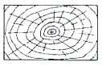
- 유리
- 석재
- 목재
- 점토
(정답률: 82%)
57. 입체 투상도에서 제3상한에 물체를 놓고 투상하는 방법의 투상법은?
- 제1각법
- 제3각법
- 축측 투상법
- 사투상법
(정답률: 74%)
58. 척도에 관한 설명 중 틀린 것은?
- 축척은 실제 크기보다 작은 크기를 의미한다.
- 배척은 실제 크기보다 큰 크기를 의미한다.
- 현척은 실제 크기를 의미한다.
- 그림의 형태가 치수와 비례하지 않으면 NP를 기입한다.
(정답률: 78%)
59. 토목설계 도면에서 주로 사용되는 도면의 크기는 A1과 A3이고, 프리핸드 도면에 주로 사용되는 도면크기는 A4이다. A4 용지의 크기를 올바르게 나타낸 것은?
- 841×594㎜
- 594×420㎜
- 420×297㎜
- 297×210㎜
(정답률: 75%)
60. 토목 제도에서 치수를 나타내기 위하여 치수선과 더불어 사용하는 선으로 가는 실선으로 나타내는 것은?
- 외곽선
- 치수 보조선
- 중심선
- 피치선
(정답률: 68%)